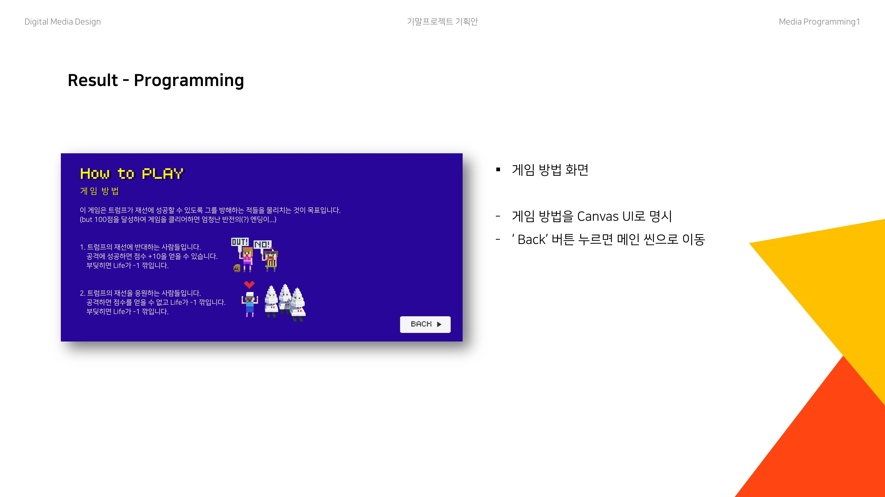
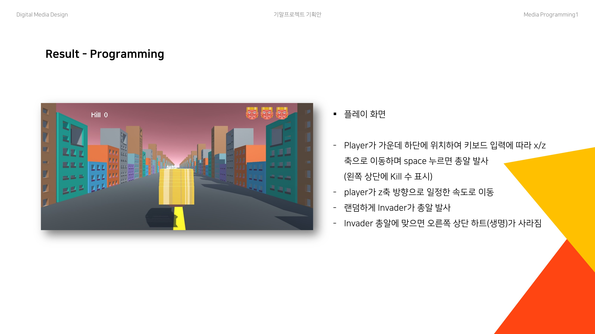
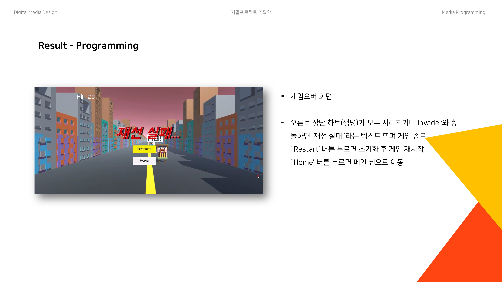
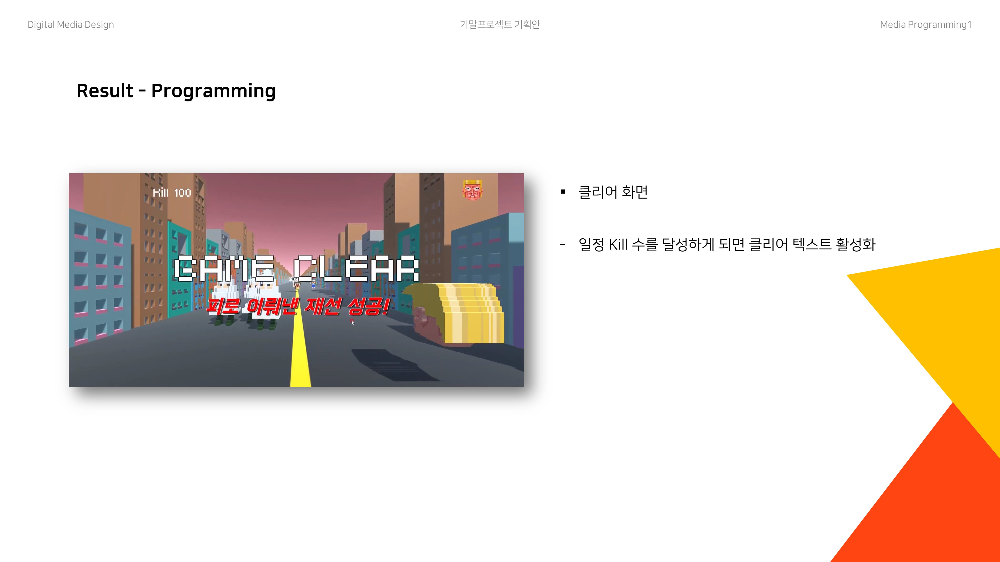
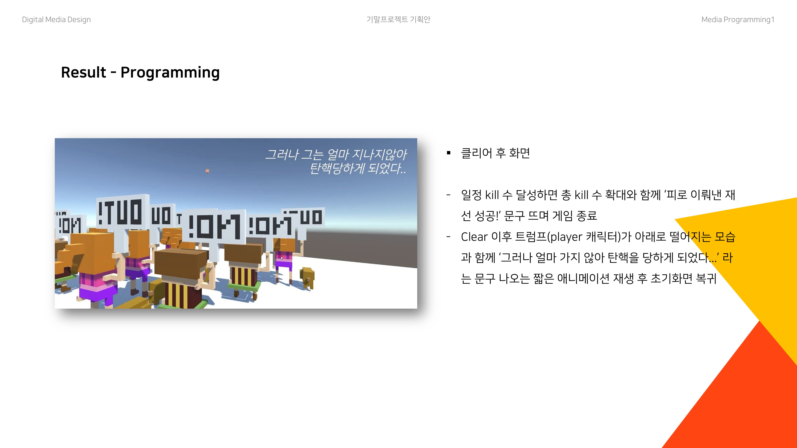
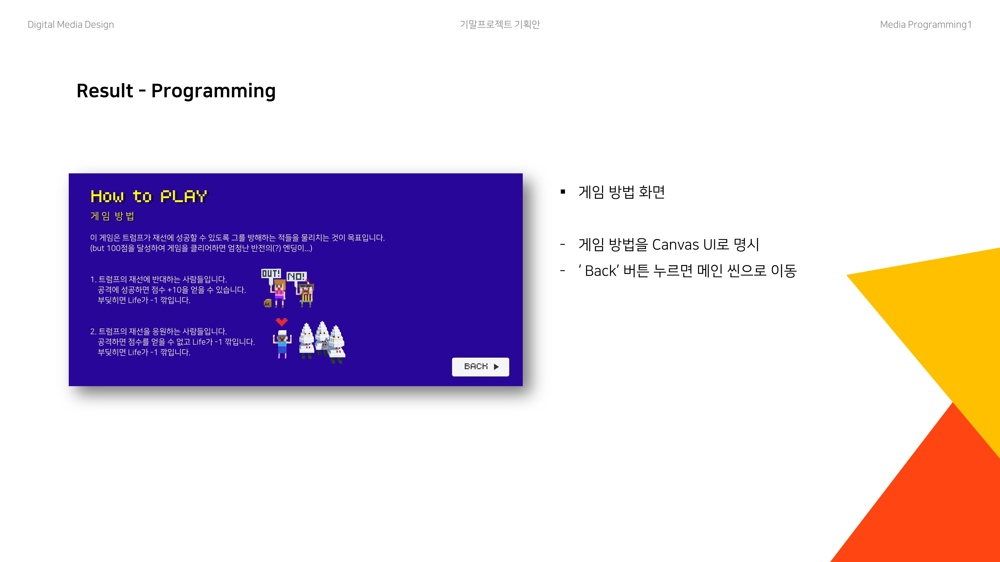
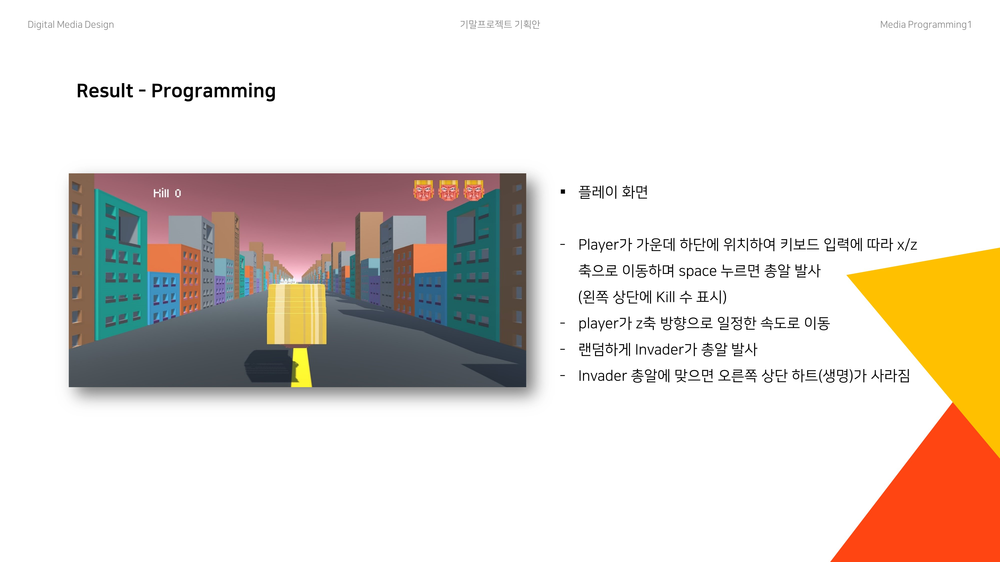
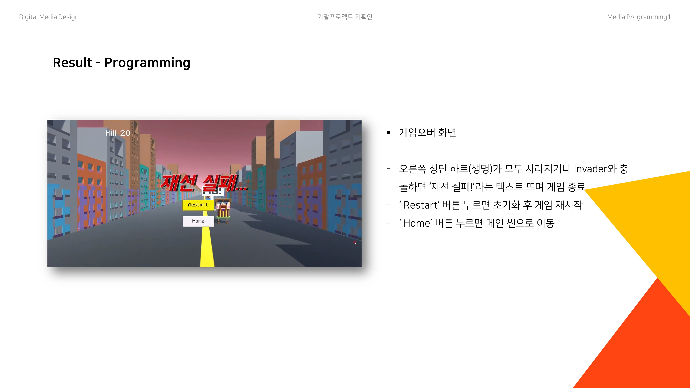
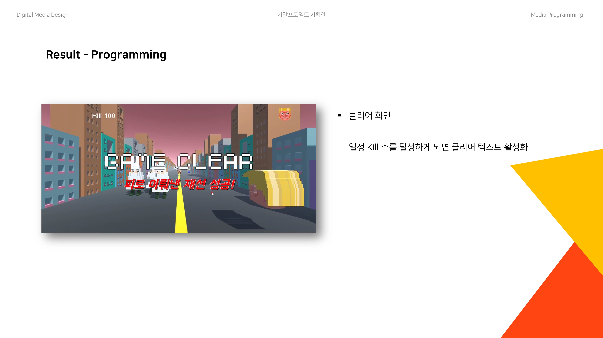
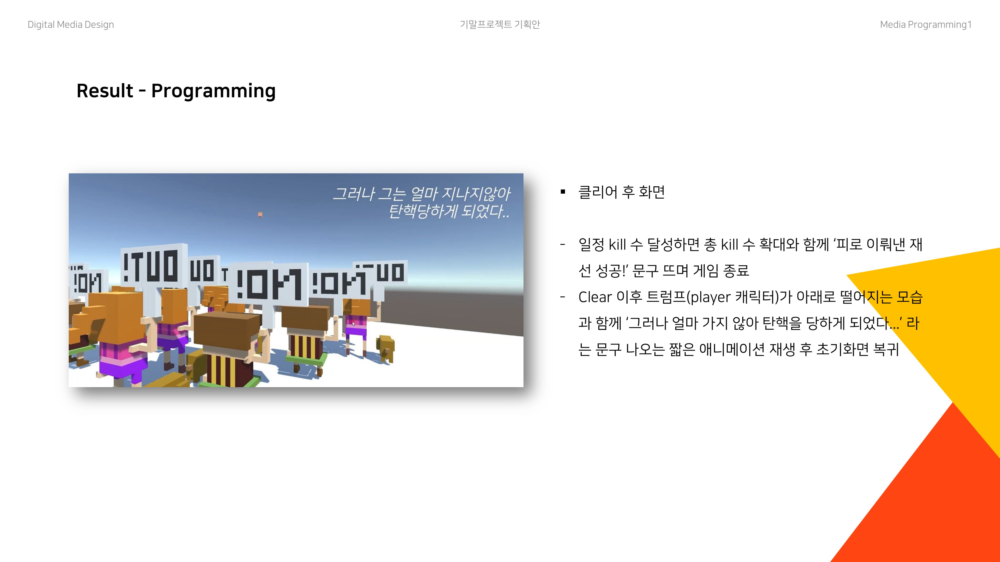

JWFOLIO
: 본질에, 위트를
무엇을 전달하고자 하는지를 잃지 않으면서도 그것의 질적 수준을 높이며 위트 있고 재미있게 표현하는 것
Unity 기반 3D 게임
Trump succeed in re-election?
게임이라는 것을 처음 만들게 된 작업으로, 플레이어가 트럼프가 되어 자신의 재선에 대해 반대하는 사람들을 죽이면 점수가 올라가고 일정 점수에 도달하면 반전의 엔딩이 나옵니다.


 








